5.2 Buszugriffsverfahren
🎯 Lernziele
Nach dieser Einheit sind Sie in der Lage dazu * das Vorgehen von Client-Server, Token, Summenrahmenprokoll- und CS-MA- Buszugriffsverfahren zu beschreiben * deren Vor- und Nachteile zu benennen * Laufzeiten von Nachrichten auf Buskabeln zu berechnen

Herausforderung

- Senden mehre Busteilnehmer zeitgleich, so überlagern sich die Spannungs-Pegel auf der Busleitung bzw. die Wellen
- Inhalt der Telegramme kann nicht mehr entziffert werden
- Im OSI-Modell Aufgabe der Sicherungs- und Vermittlungsschicht (Schicht 2&3)
Client/Server (Master/Slave-Verfahren)
- Zentrale Bussteuereinheit (Master, ggf. SPS) stellt Verbindung zu den passiven Teilnehmern (Slaves) her (Kommunikationssteuerung)
- Slaves antworten auf eine Datenanforderung des Masters unmittelbar
- Polling (zyklische Abfrage)
- Master mit aktivem Buszugriff geben die Ein-/Ausgabedaten an die Slaves
- einfaches Protokoll
- garantierte Buszugriffszeiten (d.h. es ist vorhersagbar, wie lange es dauert bis Information ausgetauscht werden kann)

✍️ Aufgabe 5_2_1: Worst Case beim Polling
- Eine zentrale SPS fragt als Master zyklisch alle Werte von Sensoren auf einer Busleitung ab und sendet Befehle
- insgesamt 255 Slaves, davon
- 1 Taster Türöffner
- 1 Motor Türöffner
- Wie lange dauert es im schlimmsten Fall bis die Tür reagiert?
Annahmen
- maximale Busleitungslänge: \(200 \text{ m}\)
- Telegrammlänge: \(2\) Byte
[Adresse].[Nachricht]- Zykluszeit des Masters und Slaves vernachlässigbar (Antworten unmittelbar)
- Baud-Rate \(9.600 \text{ Baud}\)
- Manchester-Code
- Zykluszeit je Master + Slave: vernachlässigbar
- Signal-Laufzeit Fortpflanzung des Signals im Leiter mit Lichtgeschwindigkeit wird ebenfalls vernachlässigt
✔️ Lösung
- Abrufen eines Slaves:
- Übertragungszeit (wie lange belegt das Signal die Leitung):
- 1 Bit pro 2 Baud: \(4.800 \frac{\text{ Bit}}{\text{s}}\)
- In eine Richtung: \(\frac{16 \text{ Bit}}{4800 \text{ Bit}}\text{s}=3.3 \text{ ms}\)
- Abrufen aller Salves (\(\text{Bus-Zykluszeit}\)):
- Slaves antworten, nachdem Sie die Nachricht erhalten haben
- Zeit pro Slave: \(6.6\text{ ms}\)
- Wenn Befehl direkt weitergeleitet wird, aber die Teilnehmer logisch maximal auseinander: \(6.6 \text{ ms} \cdot 254 = 1.68 \text{ s}\)
- Langsam, aber: es ist garantiert, dass es nicht länger dauert (Echtzeitfähiges System)!
Einfluss der Bus-Zykluszeit auf Komfort
Kopieren Sie den folgenden Code in: https://jsfiddle.net/
<!DOCTYPE html>
<html>
<head>
<title>Toggle Background Color with Time Delay</title>
<script>
var color = "white";
function changeBackground() {
var time = document.getElementById("timeInput").value;
setTimeout(function() {
if (color === "white") {
color = "red";
} else {
color = "white";
}
document.body.style.backgroundColor = color;
}, time);
}
</script>
</head>
<body>
<input type="text" id="timeInput" placeholder="Enter time in ms">
<button onclick="changeBackground()">Change Background</button>
</body>
</html>
Wahrnehmbare Verzögerung ab \(60 \text{ ms}\)
- ab \(60 \text{ ms}\) nehmen Nutzer:innen eine Verzögerung war
- Diese führt zu einem negativen Nutzererleben
- Häufig kann innerhalb dieser Zeit keine Rückmeldung der geschalteten Aktoren erfolgen

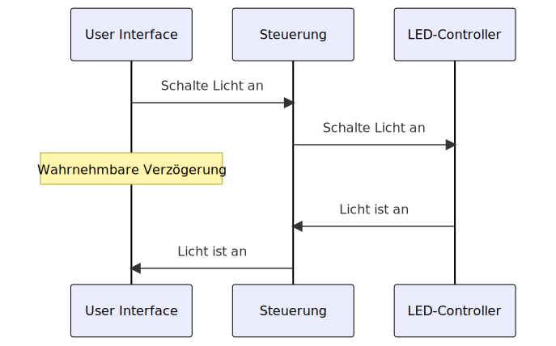
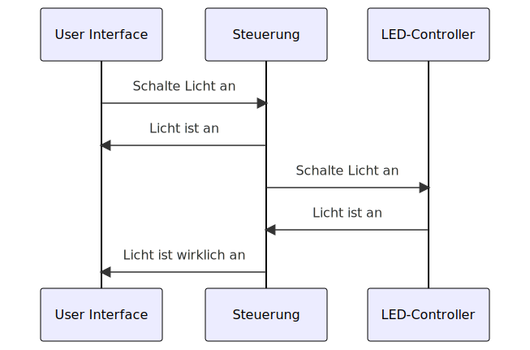
sequenceDiagram
User Interface->>Steuerung: Schalte Licht an
Steuerung->>LED-Controller: Schalte Licht an
Note over User Interface: Wahrnehmbare Verzögerung
LED-Controller->>Steuerung: Licht ist an
Steuerung->>User Interface: Licht ist an
sequenceDiagram
User Interface->>Steuerung: Schalte Licht an
Steuerung->>User Interface: Licht ist an
Steuerung->>LED-Controller: Schalte Licht an
LED-Controller->>Steuerung: Licht ist an
Steuerung->>User Interface: Licht ist wirklich an
Aufgaben von Buszugriffsverfahren
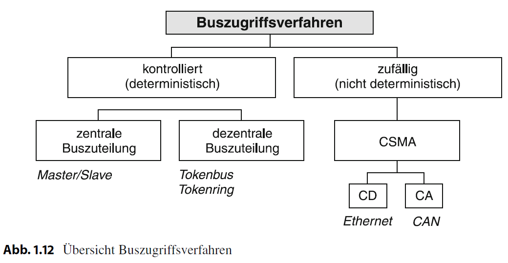
Vermeidung von Kollisionen
- verhindern: deterministische Verfahren wie Polling sorgen dafür, das keine Kollisionen stattfinden
- erkennen: zufällige Verfahren lassen Kollisionen zu, können aber damit umgehen
Ermöglichen von Echtzeitfähigkeit
- kann garantiert werden, dass die Nachrichten in benennbar Zeit ankommen?
- Polling: Langsam, aber maximale Zeit kann berechnet und garantiert
- Zufällige Buszugriffsverfahren: maximale Zeit kann nicht garantiert werden (i.d.R. nicht Echtzeitfähig)
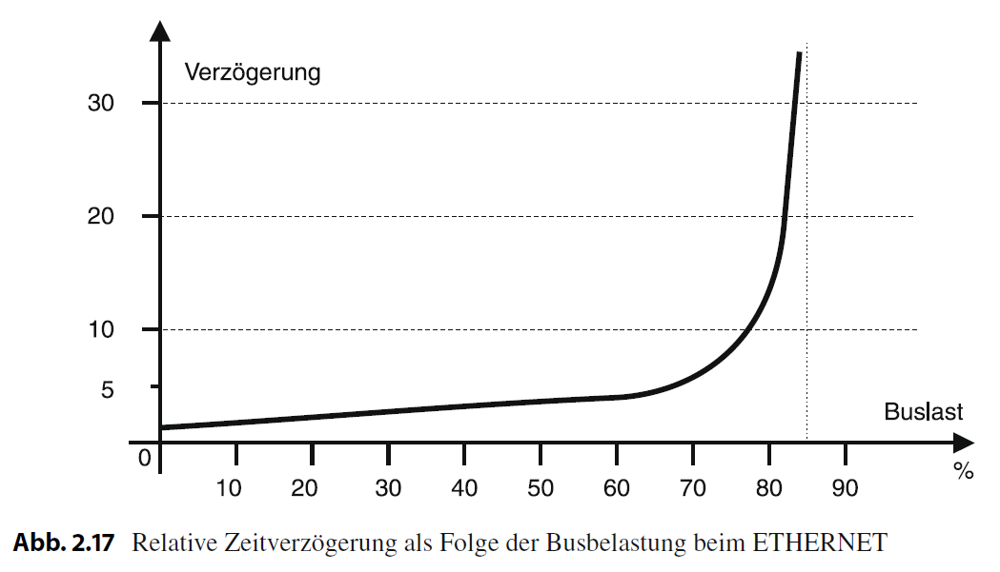
- Zeitraum oder die Datenlänge für einen Kommunikationszyklus und damit maximale Zeitdauer, bis die Daten übertragen ist berechenbar
- Damit wäre auch eine Schneckenpost echtzeitfähig, sofern die die versprochene Zustellzeit garantiert einhalten kann
- zufällige Buszugriffsverfahren sind i. d. R. nicht echtzeitfähig
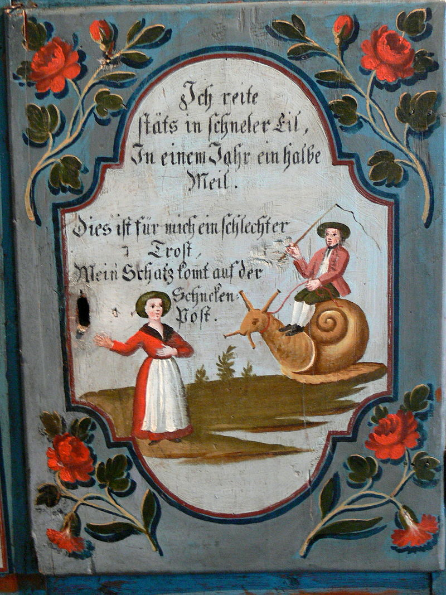
Deterministische Buszugriffsverfahren
- deterministisch:
- Master/Slave-Verfahren
- Polling (zyklische Abfrage der Slaves) - Nachteil: Langsam!
- Token Systeme
Token-Systeme
Als Token, Zugstab, Signalstab, Streckenstab oder Knüppel bezeichnet man im Eisen- und Straßenbahnwesen ein Objekt, dessen Besitz zum Befahren eines eingleisigen Streckenabschnitts berechtigt.
- z.B. Innsbrucker Mittelgebirgsbahn
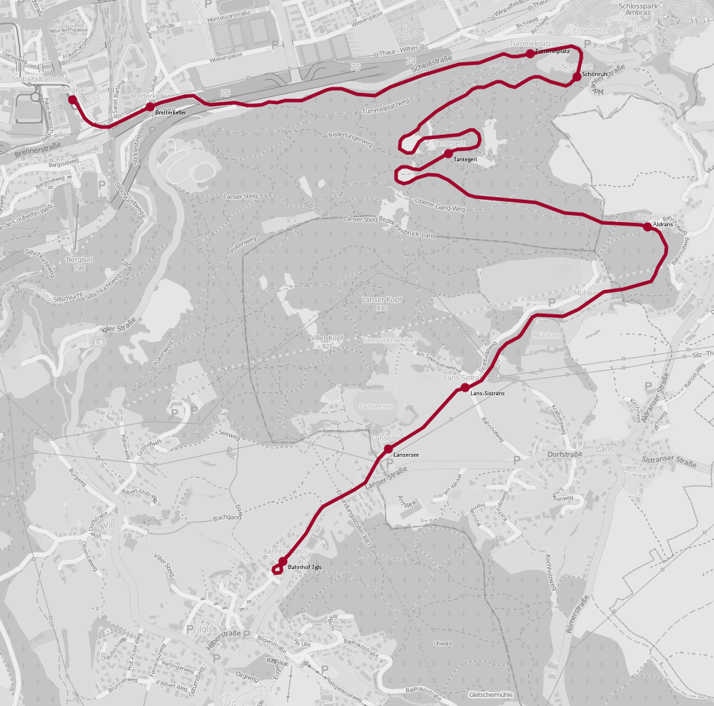
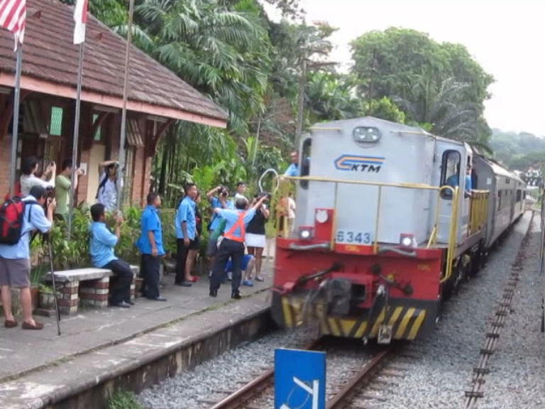
Token Ring (Logischer Ring)
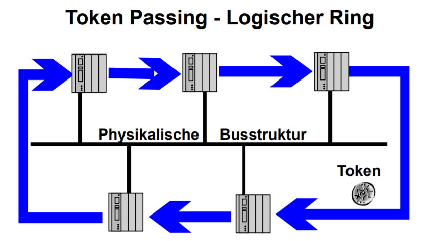
- Vorsicht: Logischer Ablauf muss nicht der verbauten Topologie entsprechen
- alle Teilnehmer können die Kommunikationssteuerung übernehmen (Multi-Master)
- nur Teilnehmer mit Token hat Buszugriffsrecht und agieren dann als Master
- garantierte Buszugriffszeiten: Sender muss Token nach bestimmter Zeit wieder freigeben
- einfache Realisierung
- Kombination mit Master-Slave möglich (Token Passing)
🧠 Summenrahmenprotokoll
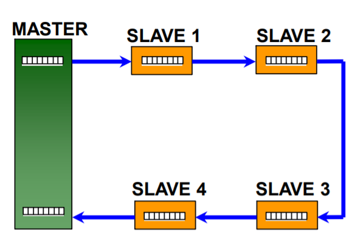
- Der Master gibt alle Daten in einem Summenrahmen an alle Slaves
- Im Summenrahmen ist eine Rahmen für die Inputs und Outputs aller Slaves gegeben
- garantierte Buszugriffszeiten (deterministischer Prozess)
- sehr effiziente Busauslastung
Summenrahmenprotokoll Beispiel EtherCat

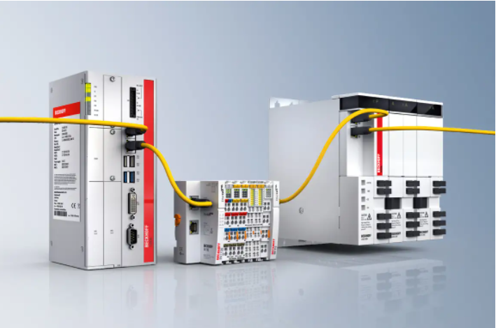
- Ein- und Ausgangsklemmen werden über Ethercat angesprochen
- Hardware wie Ethernet, jedoch mit Summenrahmenprotokoll
Zusammenfassung deterministischer Buszugriffsverfahren
- Sender vor dem Sendebeginn eindeutig bestimmt
- Buszuteilung (Sendeerlaubnis) zentral von einer Leitstation (Master/Slave-Verfahren) oder dezentral durch mehrere Steuereinheiten (Tokenbus, Tokenring)
Zufällige Buszugriffsverfahren
- die sende-willigen Teilnehmer greifen nur bei Bedarf (i.e., zufällig) auf das Übertragungsmedium zu
- z.B. bei Taster-Betätigung im Beleuchtungssystem
- Medium darf nicht anderweitig von einem anderen Teilnehmer belegt sein (Carrier Sense, CS)
- Ist dies der Fall, muss die Sendung auf einen späteren Zeitpunkt verschoben werden (Multiple Access, MA)
🧠 Carrier Sense Multiple Access (CS/MA)
- falls Busleitung belegt, erneuter Versuch zu späteren Zeitpunkt
- es ist allerdings ungewiss, ob Busleitung beim nächsten Versuch frei ist
- es kann keine maximale Zeit zur Datenbereitstellung garantiert (keine Echtzeitfähig).
🧠 Bus-Kollision
- Zwei Sender beginnen etwa gleichzeitig mit der Sendung
- Sendungen kollidieren und zerstören sich gegenseitig (Überlagerung der Wellen)
- Wird erkannt, wenn der Empfänger die übertragenen Daten auf Fehler überprüft (Prüfsumme)
- Voraussetzung: Sender empfangen ihre eigenen Signale während der Sendung.
- ist es zur Kollision gekommen und die Übertragung wird sofort eingestellt. (Collision Detection, CSMA/CD)
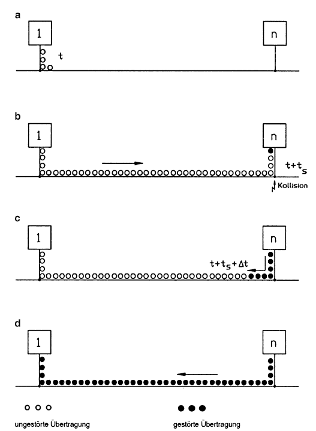
Kollisionserkennung
- a: Sendebeginn zum Zeitpunkt \(t\) ,
- b: Kollision zum Zeitpunkt \(t+t_s\) mit \(t_s\) Signallaufzeit,
- c: Zustand zum Zeitpunkt \(t + t_S + \Delta t\),
- d: Zustand zum Zeitpunkt \(t + 2 t_s\)
Kollisionserkennung
- der Sender \(n\) erkennt die Kollision nach \(t+t_s\)
- Sender \(1\) erst zum Zeitpunkt \(t+ 2 t_s\).
- Pakete die kürzer sind als \(t + 2 t_s\) werden nicht immer durch die Kollisionserkennung erkannt
Auflösen einer Bus-Kollision
- Nach der Kollisionserkennung überträgt der Sender ein kurzes Störsignal (jam), mit dem er alle anderen Teilnehmer über die erkannte Kollision informiert (Broadcast).
- Alle sende-willigen Teilnehmer stellen dann ihre Sendung für eine zufällige Zeitdauer, die einem ganzzahligen Vielfachen der maximalen doppelten Signallaufzeit entspricht, zurück und versuchen dann erneut den Zugriff.
Zeitverhalten
- mit steigender Busauslastung steigt die Wahrscheinlichkeit einer Kollision
- Verzögerung bis zum Zustellerfolg aller Nachrichten am Beispiel ETHERNET (CSMA/CD)
✍️ Aufgabe 5_2_2: Bewertung eines Buszugriffsverfahrens für sicherheitskritische Anwendungen
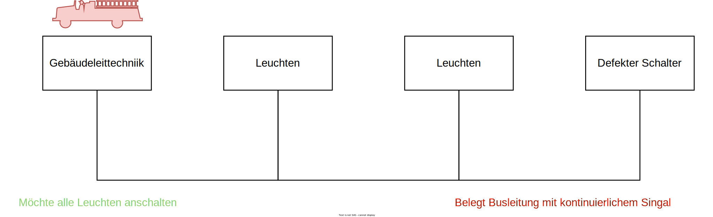
- Welche Ansätze gibt es bei einem Bussystem, die Leuchten in einer Notsituation garantiert auf den Zustand
leuchtendzuschalten? - Annahme, der defekte Schalter sendet dauerhaft den Zustand
ausauf den Bus, wenn er er Chance dazu hat - Welches Buszugriffsverfahren sollte genutzt werden?
✔️ Lösung
- Wenn der defekte Schalter wirklich dauerhaft sendet, dann wird der Bus durch den defekten Schalter blockiert
- Beim Master-Slave Verfahren würde der Master den defekten Schalter erkennen und die Leuchten auf
leuchtendschalten und in der Folge den defekten Schalter nicht mehr ansprechen